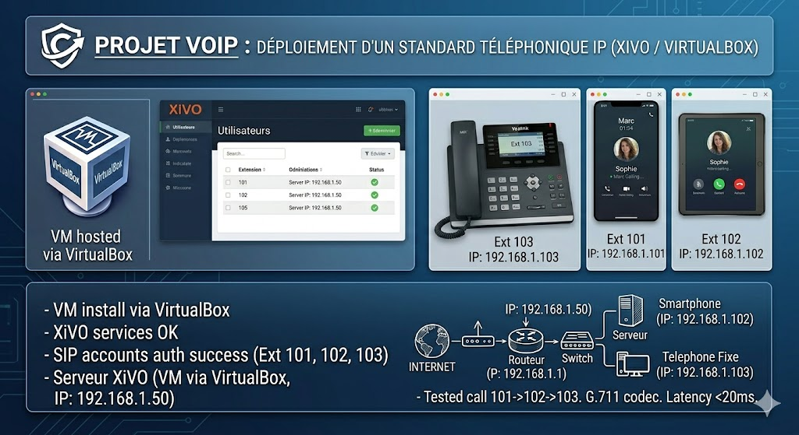

Réseaux & Routage
- Routeurs Cisco 1841 via CLI (IOS)
- VLANs, trunks & segmentation réseau
- Routage statique & dynamique
- NAT/PAT, DHCP, DNS, filtrage IP
- Packet Tracer, Wireshark
BUT Réseaux & Télécommunications

J'ai 18 ans et je suis originaire de Clermont-Ferrand.
Actuellement étudiant en BUT Réseaux et Télécommunications, je porte un intérêt particulier aux infrastructures réseau, à la cybersécurité et aux services télécoms.
J'apprends surtout en pratiquant : diagnostiquer une panne, en comprendre la cause et remettre un service en fonctionnement sont des missions qui me motivent réellement. J'ai choisi cette filière pour son approche concrète et professionnalisante.
Curieux et rigoureux, j'aime analyser les problèmes en profondeur et communiquer clairement pour faire avancer l'équipe.
Je recherche une alternance à partir de septembre 2026, avec un rythme d'un mois en entreprise et un mois en formation. Cette expérience me permettrait d'appliquer mes compétences, de contribuer à des projets réseau concrets et de gagner en responsabilités, notamment vers des missions d'ingénierie ou d'exploitation.
À l'issue de mon BUT, mon objectif est d'intégrer une école d'ingénieur.
IUT Clermont Auvergne - Site d'Aubière
J'ai choisi le BUT Réseaux & Télécommunications parce que je suis passionné par le fonctionnement des systèmes informatiques et par la manière dont ils communiquent entre eux. Je souhaite développer des compétences techniques solides et recherchées dans un domaine en constante évolution, notamment en protocoles réseaux, en administration système et en sécurité informatique.
Apprentissage des protocoles, administration système et sécurité.

Lycée Godefroy de Bouillon - Clermont-Ferrand
Spécialités : Mathématiques et Physique-Chimie

Déployer une infrastructure réseau professionnelle à domicile pour l'auto-apprentissage.
Environnement de test fonctionnel permettant de simuler des pannes réelles et de tester des configurations réseaux avant déploiement.

Développer une plateforme web dynamique de gestion de compétences en cybersécurité.
Interface intuitive permettant la validation des compétences par les formateurs et la consultation des progrès par les étudiants.

Mettre en place un IPBX (autocommutateur téléphonique IP) pour gérer des communications internes au réseau local.
Communications voix établies avec succès entre deux appareils (PC et Smartphone) en utilisant des softphones connectés au Wi-Fi local.

Passionné de musculation depuis 2 ans, je m'entraîne régulièrement 4 à 5 fois par semaine. La salle de sport m'apporte discipline, dépassement de soi et gestion du stress.
Cette pratique développe ma rigueur, ma persévérance et ma capacité à me fixer des objectifs à long terme - des qualités que je transpose dans mes études et projets professionnels.
Si mon profil vous intéresse, veuillez me contacter par mail sur l'adresse :
lounis.cartron@etu.uca.fr